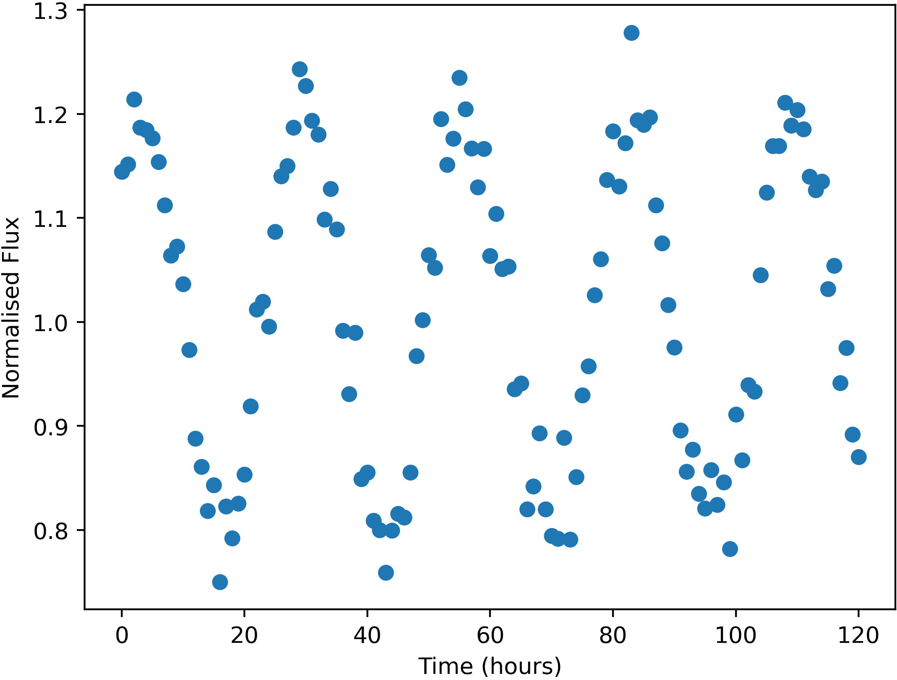

Some stars in the sky were found to change in apparent brightness over time, usually following a periodic trend.

Example of a variable star lightcurve - star RightS133361
Units of the variable data are:
Uncertainties in this data (one standard deviation) are:
Here is a list of the flashes detected, with their approx. positions and number of photons detected. Positions are given by where they would appear in the relevant wide-field camera image. Positions are only accurate to 0.05 degrees (one standard deviation).
The X-Ray camera is sensitive to burts of more than 174 photons only.
| Name | Direction | X | Y | Photon-Count |
|---|---|---|---|---|
| FE01 | Left | -13.31 | 44.87 | 896 |
| FE02 | Top | 4.80 | 15.35 | 280 |
| FE03 | Bottom | -30.43 | 0.47 | 715 |
| FE04 | Bottom | -4.94 | -34.41 | 749 |
| FE05 | Back | 5.87 | -12.59 | 749 |
| FE06 | Back | -3.88 | -11.30 | 811 |
| FE07 | Left | -28.71 | -17.66 | 320 |
| FE08 | Back | -10.37 | 21.84 | 1247 |
| FE09 | Back | -10.29 | 22.24 | 1244 |
| FE10 | Left | 35.39 | 16.62 | 2795 |
| FE11 | Front | -26.42 | 14.56 | 60165 |
| FE12 | Left | 15.38 | -10.76 | 442 |
| FE13 | Front | -4.31 | -30.70 | 588 |
| FE14 | Right | 2.57 | -20.11 | 542 |
| FE15 | Left | 28.47 | 33.21 | 74879 |
| FE16 | Back | 15.11 | 8.25 | 464 |
| FE17 | Back | 5.81 | -12.80 | 703 |
| FE18 | Bottom | -20.60 | -16.44 | 287 |
| FE19 | Back | 27.20 | 7.99 | 346 |
| FE20 | Bottom | -15.62 | 1.24 | 607 |
| FE21 | Right | 17.81 | 27.83 | 345 |
| FE22 | Left | 2.48 | -15.30 | 890 |
| FE23 | Top | -12.43 | -34.74 | 1174 |
| FE24 | Left | 24.50 | 32.32 | 70475 |
| FE25 | Front | 24.26 | 32.86 | 1348 |
| FE26 | Left | 0.97 | 24.36 | 171720 |
| FE27 | Front | 13.50 | 6.77 | 1166 |
| FE28 | Left | -28.56 | -17.83 | 311 |
| FE29 | Left | 20.43 | 1.38 | 402 |
| FE30 | Back | -10.01 | 21.75 | 1196 |
| FE31 | Front | 23.95 | 32.52 | 1368 |
| FE32 | Back | -18.16 | -34.05 | 1098 |
| FE33 | Front | 18.02 | -15.78 | 414 |
| FE34 | Right | -37.32 | -14.47 | 803 |
| FE35 | Right | 15.32 | 26.91 | 4423 |
| FE36 | Top | -35.88 | 29.92 | 25939031 |
| FE37 | Right | -11.52 | -23.28 | 529 |
| FE38 | Front | -25.24 | -1.50 | 409 |
| FE39 | Left | 17.68 | 15.89 | 765 |
| FE40 | Front | 18.15 | -15.86 | 458 |
| FE41 | Bottom | -30.60 | 0.42 | 700 |
| FE42 | Right | 19.33 | -36.39 | 506 |
| FE43 | Back | 6.65 | 7.75 | 492 |
| FE44 | Bottom | -7.12 | 2.45 | 461 |
| FE45 | Left | 2.48 | -15.31 | 865 |
| FE46 | Top | -12.43 | -34.72 | 1177 |
| FE47 | Right | -17.01 | 23.32 | 5840103 |
| FE48 | Front | -4.26 | -30.97 | 600 |
| FE49 | Left | 39.85 | -23.80 | 801 |
| FE50 | Front | -13.82 | 7.90 | 389 |
| FE51 | Back | 6.53 | 7.65 | 507 |
| FE52 | Back | -17.86 | -34.22 | 1132 |
| FE53 | Front | -29.14 | 27.32 | 13663 |
| FE54 | Top | 38.60 | -10.26 | 371 |
| FE55 | Back | -26.61 | -39.89 | 340 |